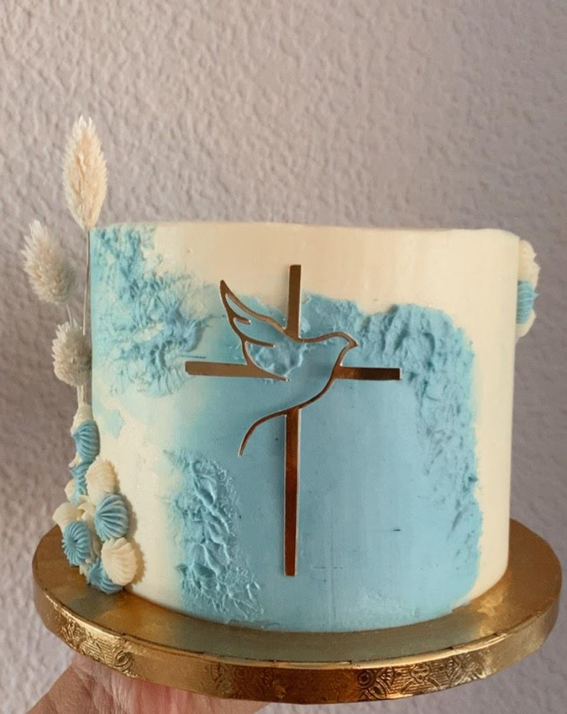

¿Se adapta al evento?
Sí. Ajustamos colores, temática y tipo de dulces a la celebración.
Eventos y celebraciones
Mesas dulces artesanales con cupcakes, galletas, mini postres y detalles coordinados con tu evento.
Consultar mesa dulceTodo coordinado
Diseñamos mesas dulces en Valencia para comuniones, cumpleaños, bautizos y eventos familiares. La propuesta puede incluir cupcakes, galletas decoradas, mini postres, cake pops y una tarta principal si lo necesitas.
Adaptamos colores, cantidades y estilo para que la mesa encaje con la decoración del evento.

Para celebraciones
Trabajamos en Valencia, Catarroja, Albal, Massanassa, Benetússer, Alfafar y alrededores.
Sí. Ajustamos colores, temática y tipo de dulces a la celebración.
Sí. Podemos hacer tarta principal, cupcakes y otros dulces coordinados.
Según fecha, número de invitados, variedad de dulces y nivel de personalización.
Envíanos fecha, número de invitados, estilo y dulces que te gustaría incluir.